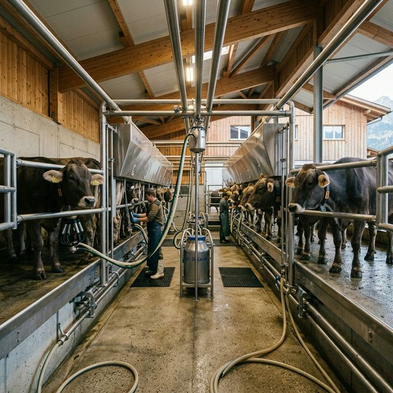
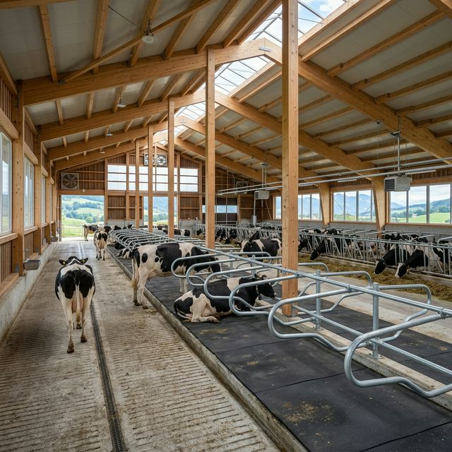
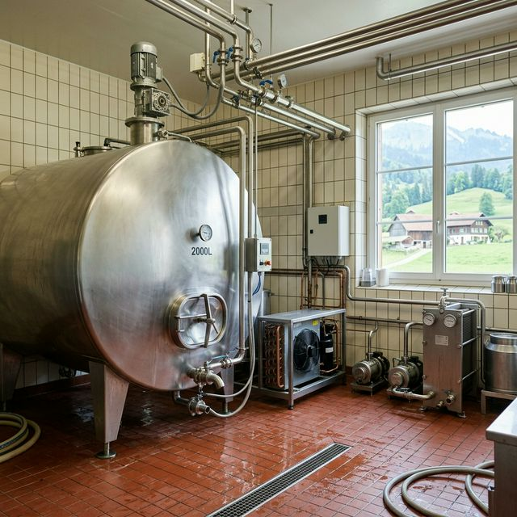
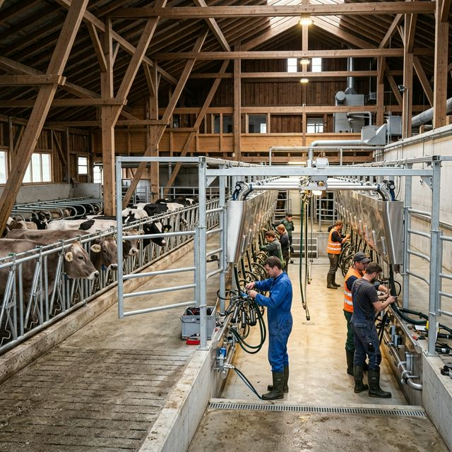
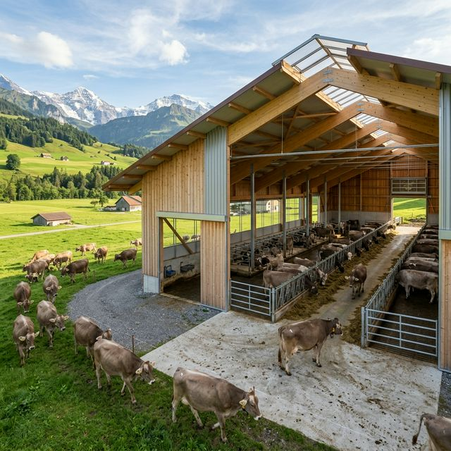
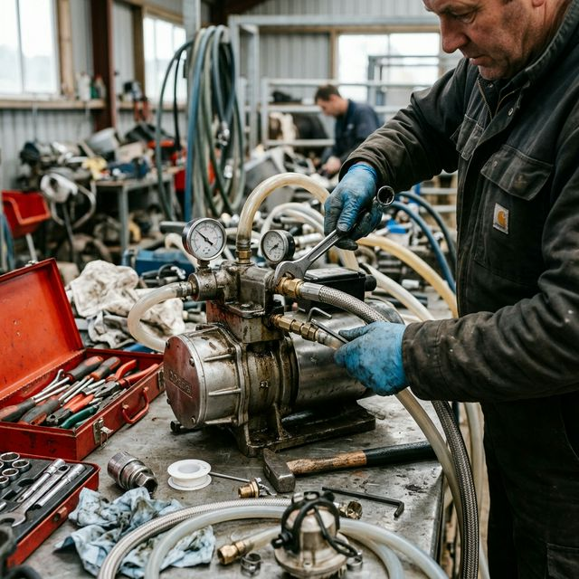

Zahlreiche Landwirtschaftsbetriebe in der Region setzen auf unsere Kompetenz. Hier eine Auswahl zufriedener Kunden.
Von kleinen Familienbetrieben bis hin zu grösseren Höfen – wir betreuen jeden Kunden persönlich und individuell.

Komplette Neuinstallation einer GEA Melkanlage mit 2x6 Fischgrätenmelkstand inkl. Milchkühlung und Herdenmanagement-System.
Referenz-Story lesen
Umbau und Modernisierung der Stalleinrichtung mit neuen Liegeboxen, Laufgang und automatischer Fütterungsanlage.
Referenz-Story lesen
Installation einer neuen Milchkühlanlage von Buri AG mit Wärmerückgewinnung. Regelmässiger Service und Wartungsvertrag.
Referenz-Story lesen
Erweiterung des bestehenden Melksystems um einen zusätzlichen Melkplatz sowie Erneuerung der Vakuumpumpe und Pulsatoren.
Referenz-Story lesen
Neubau Laufstall mit kompletter Stalleinrichtung, Entmistung und Belüftungssystem. Planung und Montage aus einer Hand.
Referenz-Story lesen
24h-Notfall-Reparatur der Melkanlage und anschliessende Generalüberholung. Seit 2018 zufriedener Stammkunde mit Servicevertrag.
Referenz-Story lesen«Urs Steinmann hat unsere neue Melkanlage perfekt installiert. Schnell, sauber und zuverlässig. Bei Fragen ist er immer erreichbar.»
«Als unsere Kühlung am Sonntagmorgen ausfiel, war Urs innerhalb einer Stunde vor Ort. So einen Service findet man selten!»
«Von der Beratung über die Planung bis zur Montage – alles aus einer Hand. Wir können Steinmann Melktechnik nur empfehlen.»